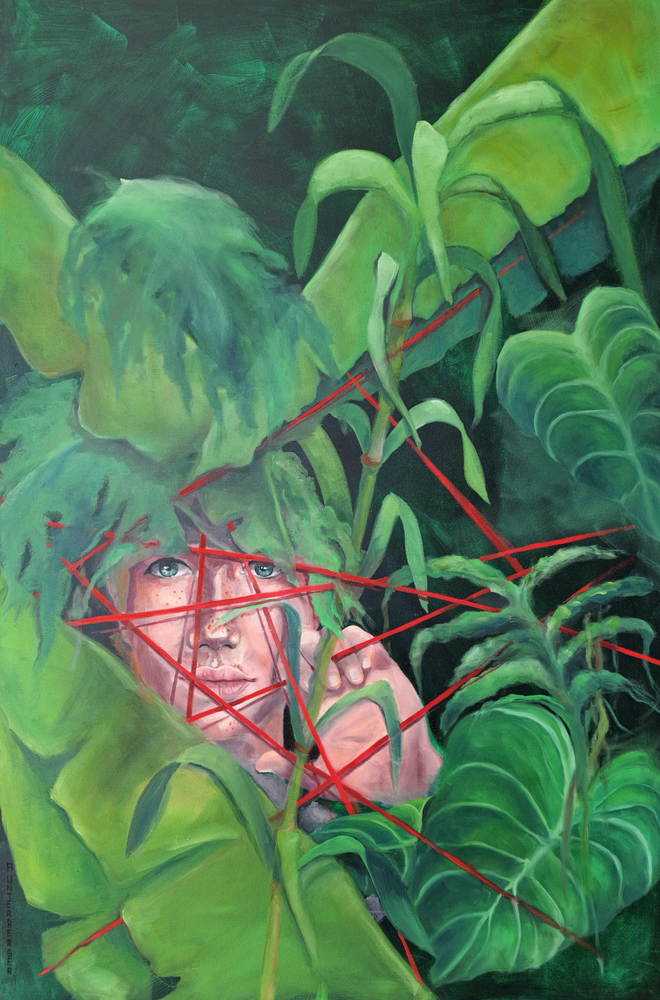

Öl auf Leinwand · 120 × 80 × 4,5 cm · 2026
Preis: € 3.400
Der moderne Mensch lebt zwischen Überfluss und Enge, Sichtbarkeit und Einsamkeit. Umgeben von Konsum, Erwartungen und unsichtbaren Regeln sucht er nach Schutz - und verliert dabei zunehmend seinen Raum. Menschen werden verpackt, eingeordnet und funktional gemacht. Die üppige Pflanzenwelt erscheint zunächst als Rückzugsort, doch auch sie wird zum undurchdringlichen Geflecht. Rote Linien durchschneiden das vermeintliche Paradies: Sie stehen für Kontrolle, Abhängigkeit und gesellschaftliche Grenzen. "Großstadt-Dschungel" zeigt eine Welt voller Möglichkeiten, in der dennoch kaum Platz zum wirklichen Leben bleibt.
Modern humans live between abundance and confinement, visibility and loneliness. Surrounded by consumerism, expectations, and invisible rules, they search for protection—while increasingly losing their own space. People are packaged, categorized, and made functional. At first, the lush vegetation appears to offer a place of refuge, yet it too becomes an impenetrable thicket. Red lines cut through this supposed paradise, symbolizing control, dependence, and the boundaries imposed by society. “Urban Jungle” depicts a world full of possibilities in which, nevertheless, there is scarcely any room left to truly live.